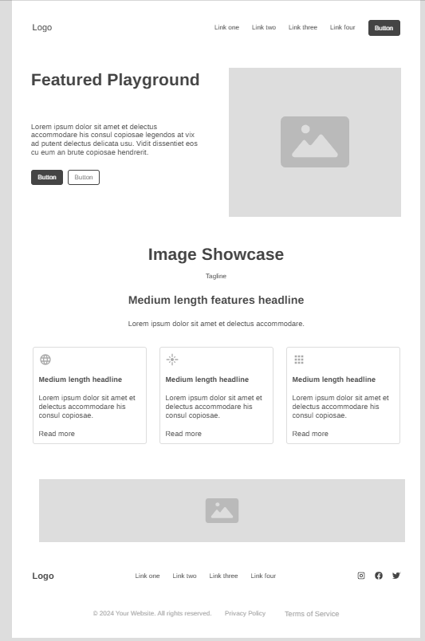
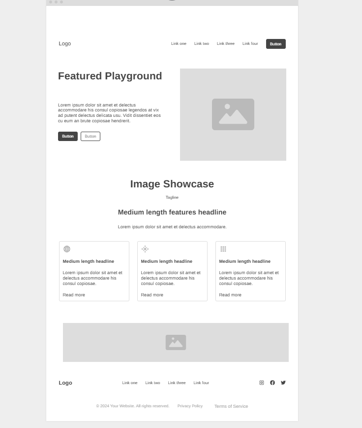

Shaded Playgrounds
This site name reflects its purpose clearly — helping parents and caregivers find playgrounds that offer shade, making outdoor play more comfortable and safe for children. It's simple, descriptive, and easy to remember.
domain availability: shadedplaygrounds.com
The purpose of this site is to help families discover shaded playgrounds nearby. It includes an interactive map, user-submitted reviews, park features (like shade structures, splash pads, or restrooms), and a form to suggest new shaded playgrounds.
Mobile View:
Desktop View:
The wireframes show a homepage layout including a header with logo and nav, search bar, map or featured parks, and footer. The mobile view stacks content vertically for easy scrolling, while the desktop view uses a multi-column layout.